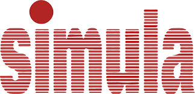
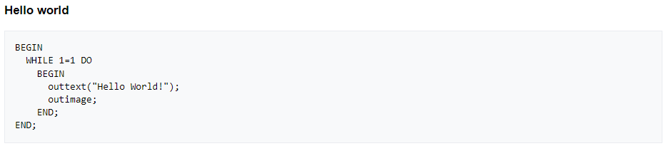

Simula (1962-1968)
Simula é uma linguagem de programação orientada a objetos que foi desenvolvida por Kristen Nygaard e Ole-Johan Dahl no final da década de 1960 no Instituto Norueguês de Tecnologia (NTH).
Ela é considerada a primeira linguagem a introduzir os conceitos fundamentais da programação orientada a objetos. A principal motivação por trás do desenvolvimento dela era a necessidade de modelar sistemas do mundo real e simular seu comportamento de forma precisa. Antes do Simula, as linguagens de programação existentes não tinham recursos adequados para lidar com problemas complexos de simulação.

É uma linguagem de programação pioneira na área de programação orientada a objetos, desenvolvida para lidar com problemas complexos de simulação. Seus conceitos, como classes, objetos, herança e polimorfismo, foram fundamentais para o desenvolvimento da programação orientada a objetos como a conhecemos hoje.
Atividade desenvolvida como extensão no projeto
PACEX/Mundo Tech do curso de análise e Desenvolvimento de Sistemas
Unipar - Cascavel